История покупки
Как проходила покупка
Сергей — военный пенсионер. Он рассказывает, что после получения ключей сделал ремонт и жил в апартаменте.
История подготовлена по публикациям канала «Отнять и не вернуть: „дело Актёра“» ↗ и предоставленным документам по делу.
2014 · Деньги за строящийся объект
Оплатил покупку задолго до оформления права
Военный пенсионер Сергей Куземин выбрал апартамент в корпусе «Чайка» в Ялте. 17 апреля 2014 года он заключил предварительный договор с компанией, которая строила и продавала недвижимость.
13 мая Сергей перечислил продавцу 8 млн рублей, а 2 июня — ещё 2 245 108,61 рубля. Всего — 10 245 108,61 рубля. Оба платежа направлены самому обществу. Они и банковская выписка приведены в решении суда.
Сергей платил за будущую недвижимость, пока комплекс ещё строился. В предварительном договоре было предусмотрено: внесённая сумма станет авансом по основному договору.
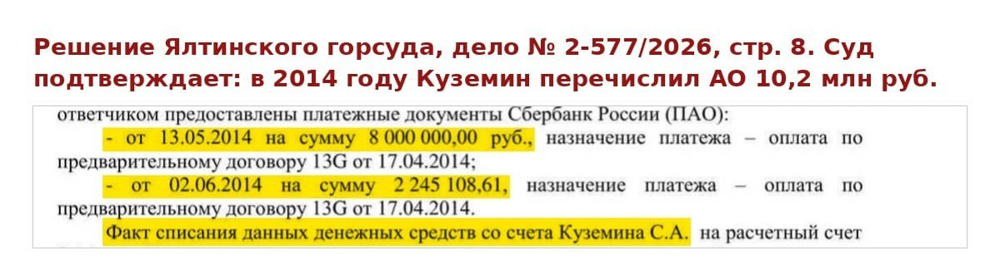
2016–2023 · Ключи, ремонт, собственность
Продавец письменно подтвердил: оплачено полностью
6 мая 2016 года Сергей получил ключи. В канале рассказывается, что он сделал ремонт и жил в приобретённом апартаменте. Оформления собственности пришлось ждать ещё несколько лет.
14 ноября 2023 года стороны подписали основной договор. Продавец подтвердил в нём полную оплату и окончательную цену. 21 ноября право собственности Сергея зарегистрировали.
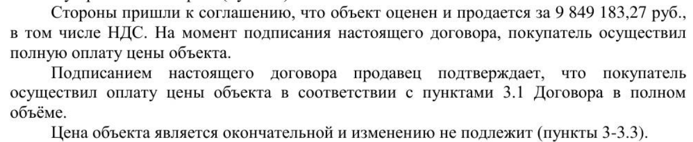
2024 · После смены руководства
Покупатель оказался участником корпоративного спора
В октябре 2024 года у АО «Дом творчества „Актёр“» сменилось руководство. 31 октября общество подало иск. Теперь продавец требовал оспорить собственную продажу и вернуть помещение.
Среди оснований — цена сделки и отсутствие корпоративного одобрения. Для Сергея это означало, что спустя годы после оплаты и передачи ключей ему пришлось заново защищать приобретённую недвижимость.
Цена этого спора
Вернуть недвижимость продавцу.
Возврат денег не присуждён.
27 августа 2026 года Ялтинский городской суд признал основной договор недействительным и постановил вернуть помещение АО «Дом творчества „Актёр“». Одновременный возврат денег Сергею этим решением не присуждён.
Главный вопрос собственника ↗ прост: почему компания, которая сама продала недвижимость и получила оплату, добивается её возврата, а покупатель остаётся без присуждённого возврата уплаченного?
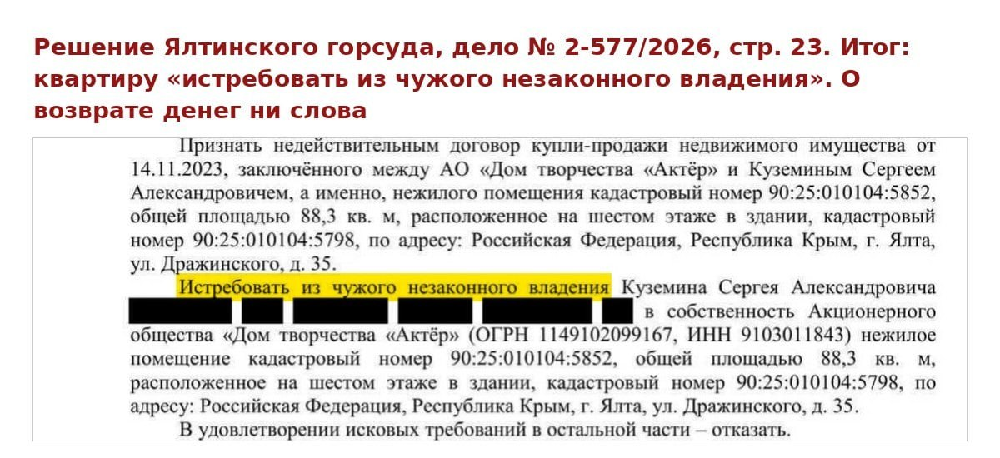
Правило о возврате имущества, которое приводит суд
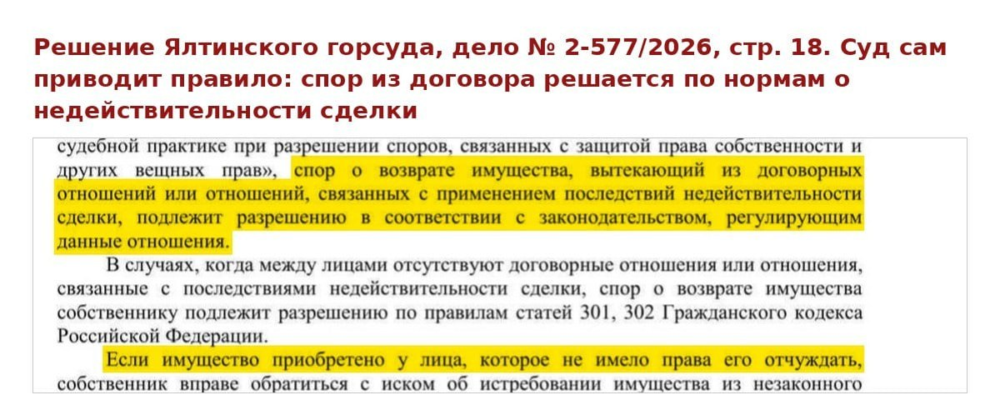
За спором о цене и одобрении сделки — годы ожидания, ремонт и жизнь человека. Сергей просит защитить результат своей покупки. Для собственников это также вопрос доверия к зарегистрированному праву и частной собственности.
Одна покупка · Два договора
Почему суд не связал авансы с основным договором
В деле было представлено заключение специалиста: предварительный договор, дополнительное соглашение, акт передачи ключей и основной договор касаются одного объекта. Суд не придал этому юридического значения, сославшись на прекращение предварительного договора.
Сергей возражает против такого разделения покупки. Он перечислял деньги за конкретный апартамент, получил к нему ключи, а затем подписал основной договор с подтверждением оплаты. Для покупателя это последовательные этапы приобретения своей недвижимости.
Довод о крупной сделке
Почему покупатель должен отвечать за решения акционеров?
В день подписания основного договора само АО выдало справку: стоимость активов — 705,263 млн рублей; сделки дешевле 176,315 млн рублей к крупным не относятся. Цена одной покупки Сергея была многократно ниже указанного порога.
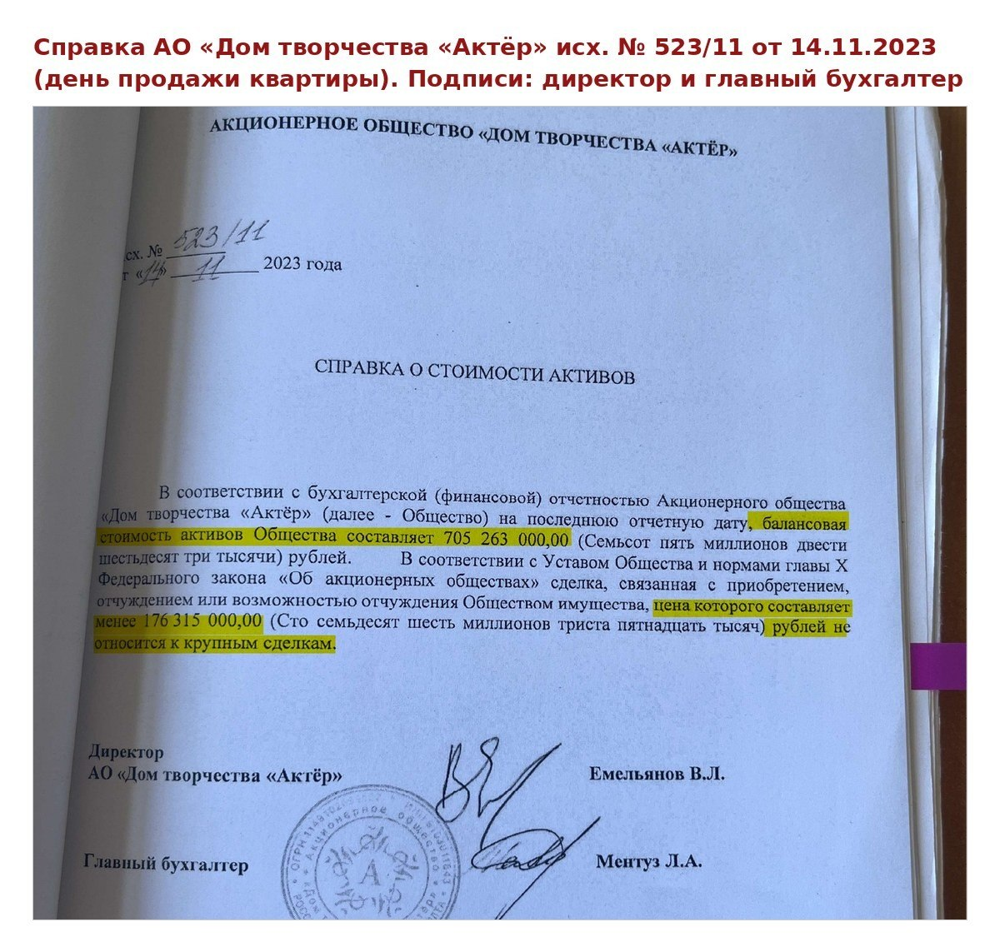
Суд объединил несколько продаж в совокупность взаимосвязанных сделок. Их общую стоимость определил по кадастровой оценке — 412,87 млн рублей — и сделал вывод о необходимости одобрения общим собранием акционеров.
Справка говорит о стоимости отдельной сделки, а суд оценил продажи в совокупности. Поэтому спор касается не только чисел, но и оснований такого объединения.
Сергей оспаривает объединение самостоятельных покупок, способ расчёта и выбор отчётного периода. Позиция Сергея о расчёте крупной сделки ↗. Собственники считают несправедливым, что последствия внутренних решений общества перекладываются на людей, которые платили самому продавцу.
Правила и расчёт крупной сделки — материалы канала
Канал сопоставляет три части решения: какую стоимость предписано сравнивать, на какую дату брать активы и какие значения использованы в расчёте суда.
На изображении показан количественный порог. В приведённом судом правиле учитывается также выход сделки за пределы обычной хозяйственной деятельности; суд счёл этот критерий выполненным, собственник оспаривает такой вывод.
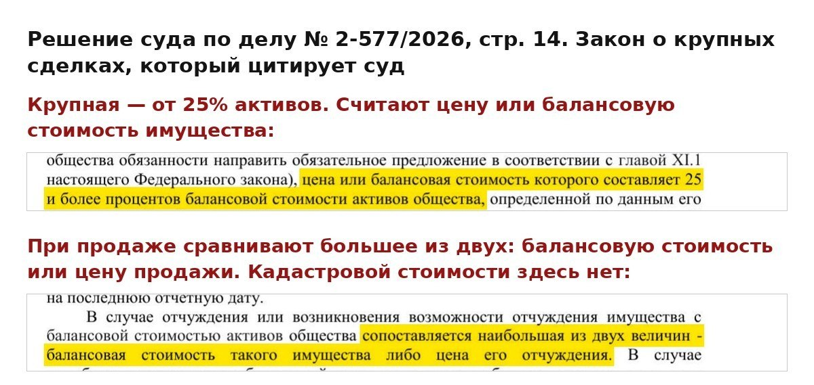
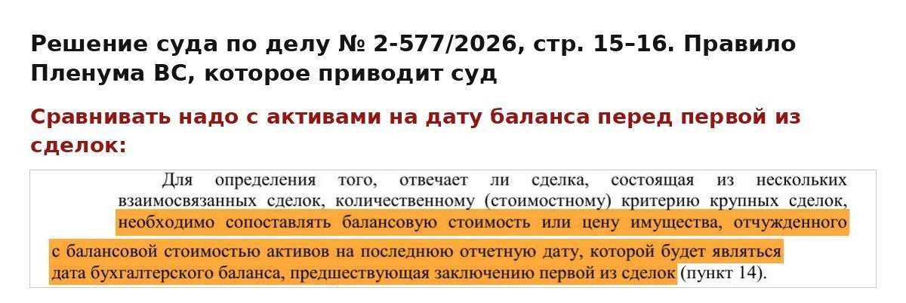
В решении приведён совокупный расчёт стоимости продаж. Фамилии в предоставленной копии скрыты, поэтому проверить, включён ли Куземин в перечень, по ней нельзя.
Довод о цене
Рубли в объявлении.
Гривны в расчёте.
Суд принял экспертизу, оценившую объект на дату предварительного договора примерно в 20 млн рублей. Сергей оспаривает её исходные данные. В канале показано расхождение валюты ↗, которое видно и в предоставленных страницах заключения.
На 14 ноября 2023 года экспертиза отдельно оценила апартамент в 35 398 325 рублей; цена основного договора в предоставленных копиях — около 9,85 млн рублей. Ниже разобрано расхождение валюты в исходных данных оценки на 2014 год. Оно само по себе не устанавливает ошибочность отдельного расчёта на 2023 год.
На печатной странице 78 объявление содержит цену 4,2 млн рублей. На странице 82 тот же по описанию объект указан уже за 4,2 млн гривен. После пересчёта в расчёт попало 13 386 870 рублей.
В канале приведено сопоставление и по второму объявлению: 4,9 млн рублей в газетной подборке, 4,9 млн гривен в экспертизе и 15 618 015 рублей после пересчёта.
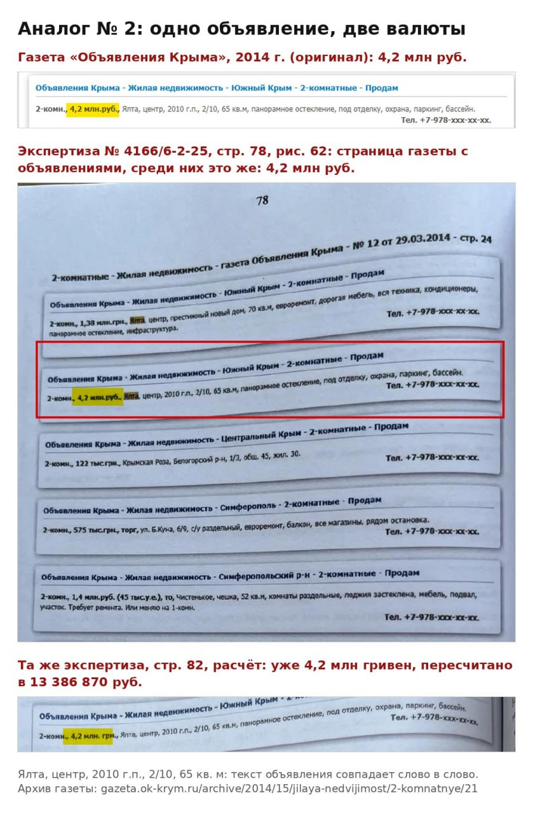
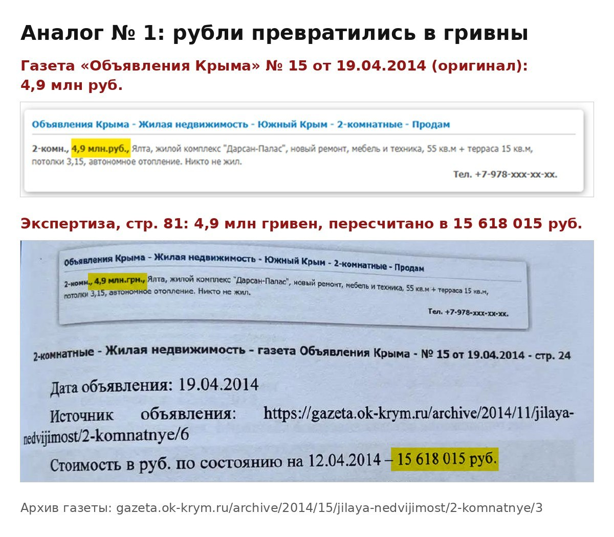
Исходная цена этого аналога после такого пересчёта стала примерно в 3,19 раза выше. Это не означает, что итоговая оценка всего апартамента автоматически завышена во столько же: в ней использованы несколько объектов и корректировки. Но расхождение требует проверки.
Суд отклонил возражения защиты и признал экспертизу достоверной. Сергей с этим не согласен.
Ещё один фрагмент экспертизы из канала
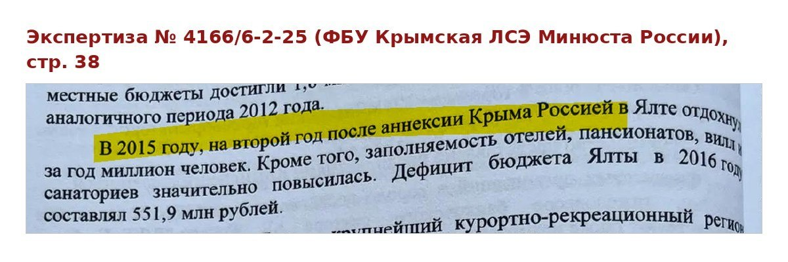
О чём ещё Сергей рассказывает в канале
Заседание после ухудшения самочувствия
В самом решении описан перерыв из-за ухудшения состояния здоровья Сергея и необходимости неотложной медицинской помощи. Далее суд указал, что доказательства болезни к просьбе об отложении не приложены, и продолжил рассмотрение.
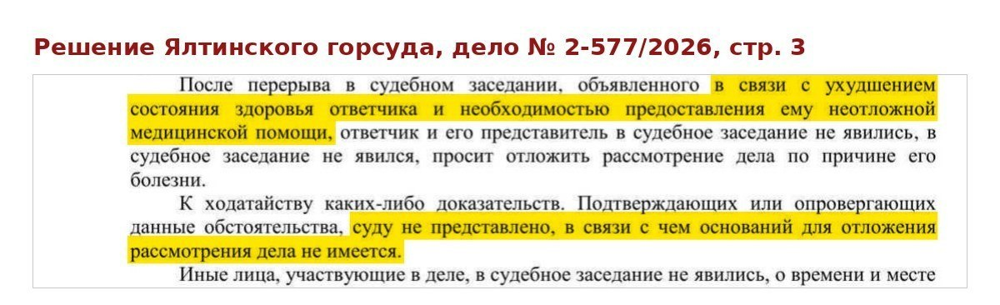
Сергей указывает, что от продолжения заседания 27 августа до оглашения решения прошло 26 минут. Позиция Сергея о ходе заседания ↗. Время приведено по каналу; протокола и аудиозаписи в полученном архиве нет.
Несогласованные описания в решении
Позиция Сергея о расхождении в решении ↗
В абзаце покупателем назван Куземин, действовавший через представительницу по доверенности. Слово «купила» не доказывает, что речь о другой покупательнице. В описаниях объекта расходятся этажи — третий и шестой; причина расхождения не установлена.
Публикации канала от 29–30 октября и 2 ноября 2026 года; предоставленные документы по делу № 2-577/2026. Изображения — материалы канала с сохранением подписей автора; фрагмент о полной оплате — из решения суда. Здесь изложено решение первой инстанции, без утверждения о его исполнении.